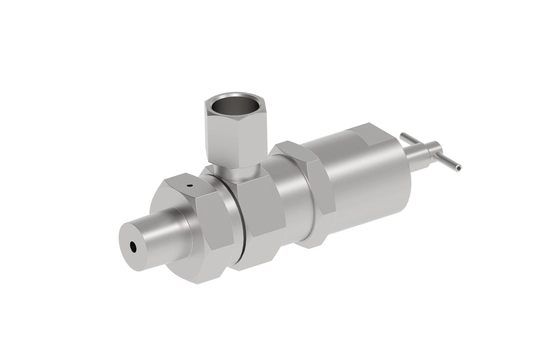

Bifold (thuộc danh mục Rotork) sản xuất instrumentation ball và needle valve cho ứng dụng isolation và venting áp suất cao, từ 1.000 psi/70 bar đến 10.000 psi/690 bar tiêu chuẩn, có thêm dải medium pressure riêng tới 20.000 psi/1.380 bar. Bài viết trình bày tiêu chí chọn theo media, áp suất/nhiệt độ, vật liệu, connection và cấu hình manifold, không áp dụng thông số tối đa của một tùy chọn cho mọi cấu hình.

Trả lời nhanh
- Needle valve: một khối (one-piece body), áp suất tiêu chuẩn 6.000-10.000 psi (414-690 bar), size 1/4" đến 1" NPT, dynamic sealing chống fugitive emission.
- Ball valve: một khối, anti-blowout stem, áp suất tiêu chuẩn 1.000-10.000 psi (70-690 bar), size 1/4" đến 2" NPT.
- Có dải medium pressure riêng (10.000-20.000 psi/690-1.380 bar) — thuộc catalogue riêng, không dùng chung datasheet tiêu chuẩn.
- Dải vận hành khuyến nghị: 0-100% MWP cho model tới 2.000 psi; 15-100% MWP cho model trên 2.000 psi.
- Ball valve được pressure test theo API 598 và BS EN 12266-1, proof test tới 1,5 lần MWP.
Ball và needle valve Bifold là gì
Needle valve Bifold dùng dynamic sealing loại bỏ hiện tượng mất kín theo thời gian như packing gland truyền thống, thiết kế compact patented, lắp trực tiếp lên back plate của panel (giảm chi phí và không cần cắt panel cho vent/needle head), torque vận hành thấp.
Ball valve Bifold có thân một khối để giảm điểm rò rỉ, anti-blowout stem (stem được giữ nội bộ, loại bỏ rủi ro bắn stem), pressure energised stem seal duy trì độ kín dù bị can thiệp từ bên ngoài (như tháo tay van), torque vận hành thấp và ổn định. Ball valve được test áp lực theo API 598 và BS EN 12266-1, proof test tới 1,5 lần áp suất làm việc tối đa (MWP).
Bảng so sánh dải áp suất và kích thước
| Loại van | Áp suất tiêu chuẩn | Kích thước | Dải medium pressure (catalogue riêng) |
|---|---|---|---|
| Needle valve | 6.000–10.000 psi (414–690 bar) | 1/4" đến 1" NPT | 10.000–20.000 psi (690–1.380 bar) |
| Ball valve | 1.000–10.000 psi (70–690 bar) | 1/4" đến 2" NPT | 10.000–20.000 psi (690–1.380 bar) |
Tiêu chí chọn ball hoặc needle valve Bifold
- Vai trò cần dùng: isolation on/off dùng ball valve; throttling/venting chính xác dùng needle valve.
- Áp suất và nhiệt độ làm việc: đối chiếu MWP thực tế với dải tiêu chuẩn hoặc medium pressure — không dùng thông số tối đa của một tùy chọn (ví dụ bản medium pressure) để áp cho cấu hình tiêu chuẩn.
- Dải vận hành khuyến nghị: với model tới 2.000 psi vận hành 0-100% MWP; với model trên 2.000 psi nên vận hành trong dải 15-100% MWP để đạt hiệu suất tối ưu.
- Kết nối và kích thước: xác nhận size NPT/BSP phù hợp hệ thống panel/manifold hiện tại.
- Vật liệu và media: xác nhận vật liệu thân van và stem seal phù hợp media (khí, dầu, nước, hóa chất) và nhiệt độ thực tế.
- Yêu cầu firesafe: nếu ứng dụng cần chứng nhận firesafe, xác nhận rõ vì có sự khác biệt thiết kế giữa bản firesafe và non-firesafe.
Model và range liên quan
| Model/range | Lý do liên quan | Trang sản phẩm |
|---|---|---|
| Bifold ball/needle valve | Range chính trong bài | Instrumentation Valves Rotork |
| Bifold Pneumatic Solenoid Valves | Thường dùng cùng hệ thống với ball/needle valve trong panel điều khiển | Bifold solenoid valve Rotork |
Mua ball/needle valve Bifold chính hãng tại Việt Nam
Fast Group Engineering là đơn vị cung cấp sản phẩm Rotork chính hãng tại Việt Nam, đầy đủ giấy tờ CO/CQ, catalogue và datasheet theo từng lô hàng. Đội ngũ kỹ thuật hỗ trợ đối chiếu áp suất, vật liệu và kết nối trước khi báo giá.
Câu hỏi thường gặp
Ball valve và needle valve Bifold khác nhau ở đâu?
Ball valve Bifold dùng cho isolation on/off, thân một khối (single-piece body), có anti-blowout stem, áp suất tiêu chuẩn 1.000-10.000 psi (70-690 bar). Needle valve dùng cho throttling/venting chính xác, có dynamic sealing và thiết kế compact, áp suất tiêu chuẩn 6.000-10.000 psi (414-690 bar).
Anti-blowout stem trên ball valve Bifold là gì?
Đây là thiết kế stem được giữ và định vị bên trong van (internally loaded and retained), loại bỏ rủi ro stem bị bắn ra ngoài (blowout) gây nguy hiểm cho người vận hành khi tháo tay van hoặc khi áp suất tăng bất thường.
Có bản áp suất cao hơn 10.000 psi cho ball/needle valve Bifold không?
Có. Ngoài dải tiêu chuẩn tới 10.000 psi/690 bar, Bifold có thiết kế medium pressure riêng cho dải 10.000-20.000 psi (690-1.380 bar), thuộc catalogue medium pressure instrumentation valves, fittings và relief valves riêng — không dùng chung datasheet với dải tiêu chuẩn.
Dải làm việc khuyến nghị của ball valve Bifold là bao nhiêu?
Theo tài liệu portfolio hiện hành, với model tới 2.000 psi nên vận hành trong dải 0-100% MWP (maximum working pressure); với model trên 2.000 psi nên vận hành trong dải 15-100% MWP để đạt hiệu suất tối ưu.
Cần gửi thông tin gì để chọn đúng ball/needle valve Bifold?
Gửi loại media, áp suất và nhiệt độ làm việc, kích thước kết nối (NPT/BSP), vật liệu cần thiết, có cần cấu hình manifold hay không, và chứng nhận (nếu có) cho Fast Group Engineering để đối chiếu đúng model trước khi báo giá.
Gửi yêu cầu media/áp suất để chọn đúng ball/needle valve Bifold
Để kiểm tra đúng mã, vui lòng gửi media, áp suất/nhiệt độ làm việc, kích thước kết nối và vật liệu cần thiết cho Fast Group Engineering qua Zalo/điện thoại (+84) 938 888 958 hoặc email minhduc@fastgroup.vn.
Nguồn tham khảo
- PUB181-001, Instrumentation ball and needle valves — trang 4-6 (features and benefits), trang 7 (dải áp suất/kích thước, dải vận hành khuyến nghị).
Ghi chú nội bộ: bài chưa đối chiếu phần "Preferred range datasheets" (trang 14+) và "Extended ball/needle valve product range" (trang 44-45) của PUB181-001 để lấy thông số theo từng model/kích thước cụ thể — reviewer cần bổ sung nếu khách hỏi model chính xác. Không dùng thông số dải medium pressure (10.000-20.000 psi) để mô tả cho model tiêu chuẩn và ngược lại.